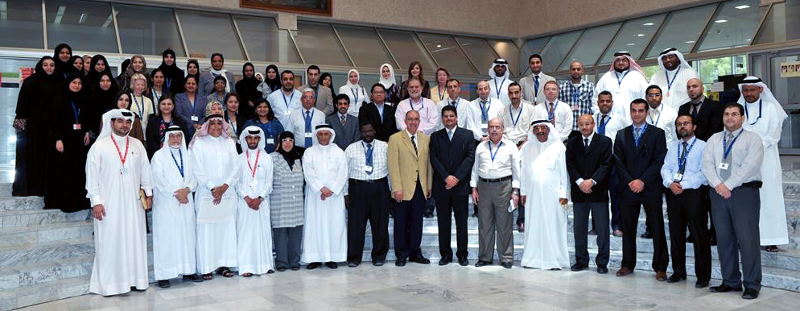

About the college
The College of Applied Studies was established on February 5th, 2005 according to a decision made by the University Of Bahrain Board Of Trustees in its 11th regular meeting with a clear vision of producing highly qualified and very well trained graduates at the Associate Diploma level for the local as well as the Gulf labor markets.
Currently, there are around 1000 enrolled students in the college and a total of 50 academic staff (8 PhD and 42 Master degree holders), and 12 Bachelor degree holders working as Demonstrators and 5 Computer Technicians.
The College of Applied Studies offer programs that aim to bridging the gap between the University of Bahrain and the labor market by offering associate diploma degrees in specializations that produce very well trained and highly qualified graduates that are urgently needed for the Bahraini and the Gulf markets.
To achieve this, the study plans for different programs address both the theoretical as well as the practical training that is utilized through the usage of a total of 34 general as well as specialized computer laboratories. More specialized and dedicated laboratories are to be established as well in the future.
In addition, the University of Bahrain also offers the Students of the College of Applied Studies the possibility of continuing their education at the Bachelor degree level. For those who are willing to continue their education, the following must be met by a student:
- A minimum overall GPA of 3.0 out of 4.0.
- A minimum GPA of 2.5 out of 4.0 in the transfer courses; which are different for each academic department and are identified by the corresponding college and department. In case a student was accepted at that academic program, then 0 credits from his Associate Diploma will be accounted for toward the Bachelor degree.